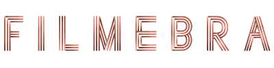
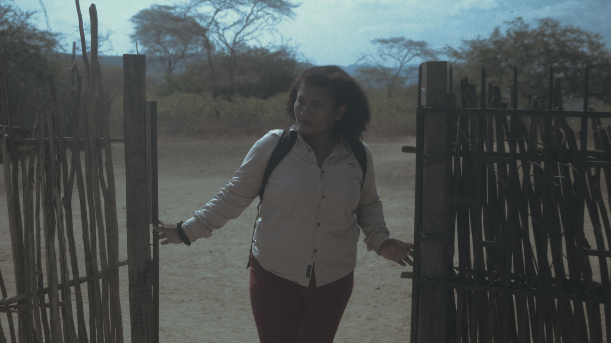
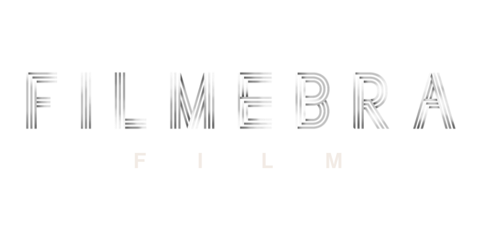
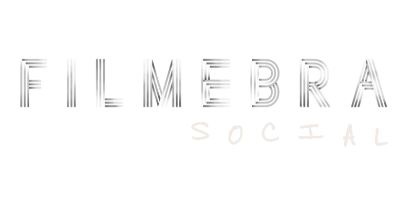
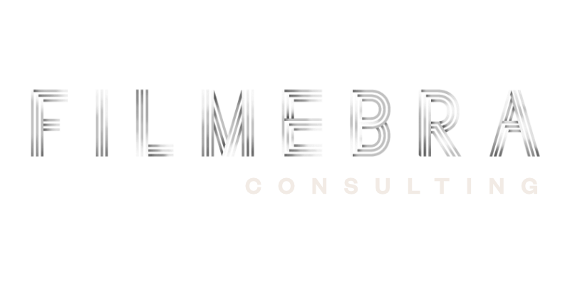
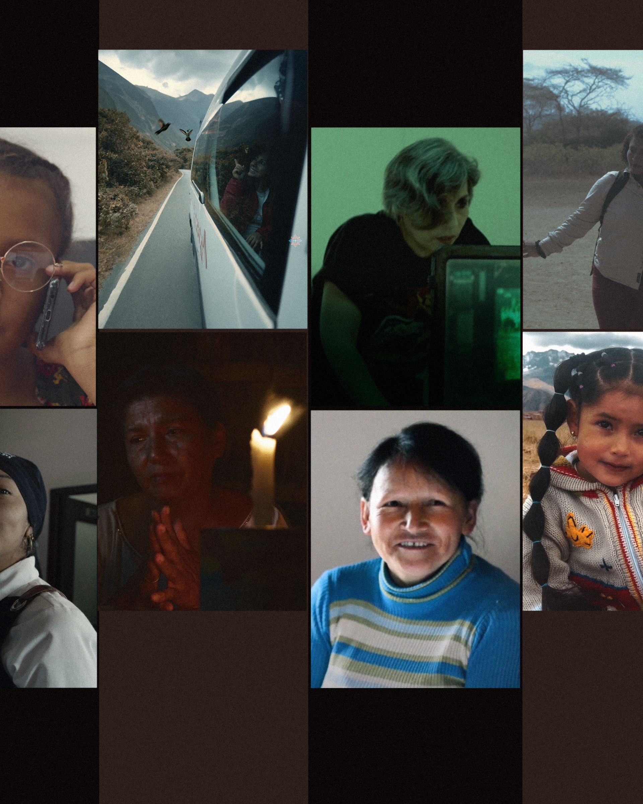

Cine, Entretenimiento y Comunidad












Tenemos un compromiso clave que dirige nuestro camino: generar un cambio positivo en las personas, en especial las mas vulnerables. A través del cine, proyectos sociales o en estrategias para organizaciones, siempre nuestra prioridad es generar una sociedad de cambio para un entorno más justo y equitativo.